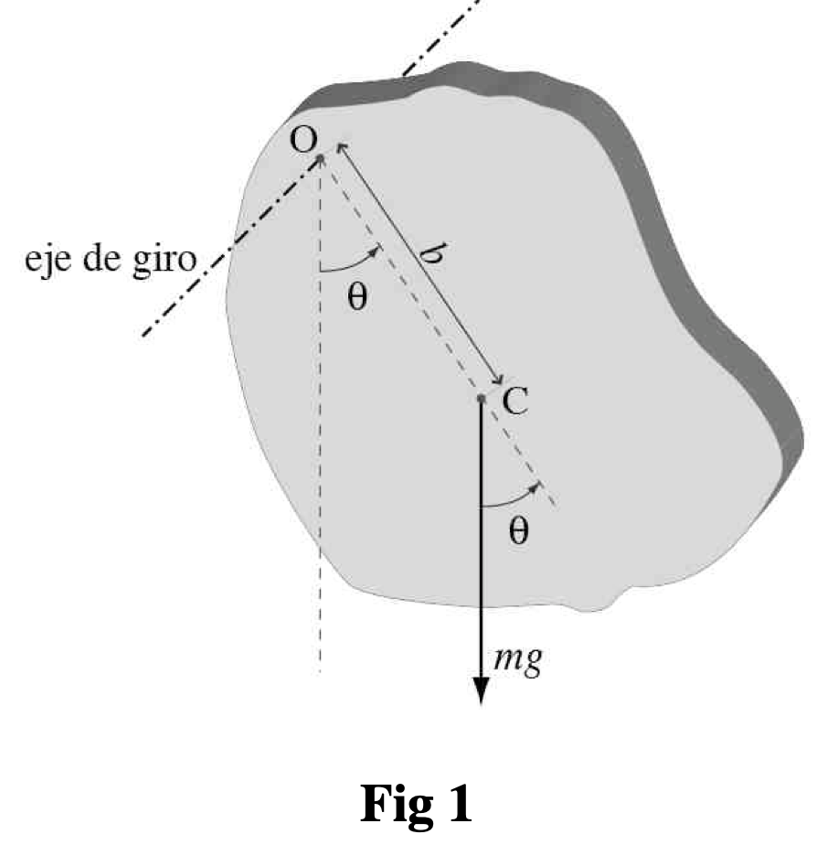
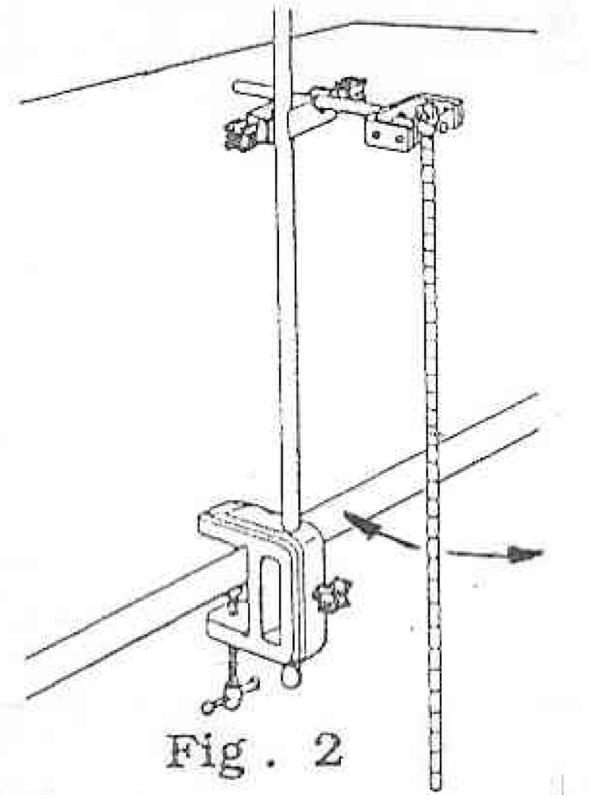
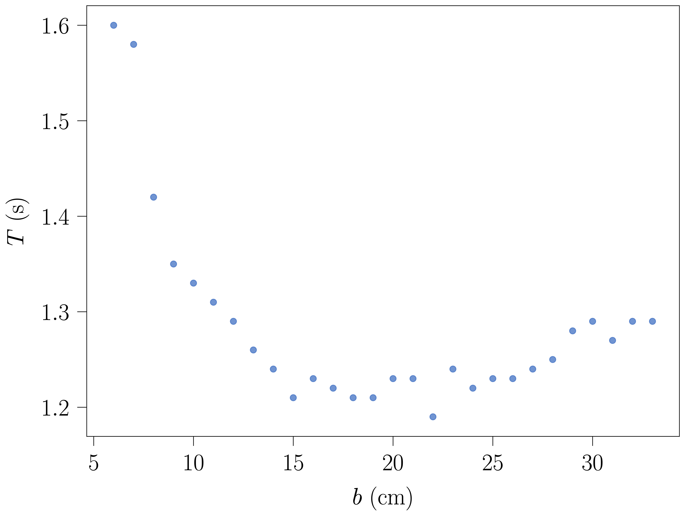
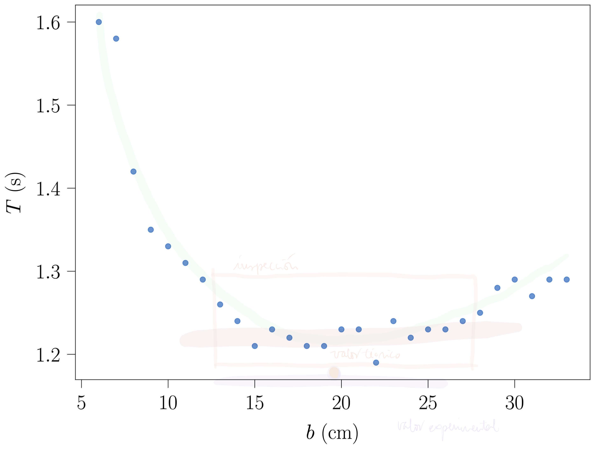
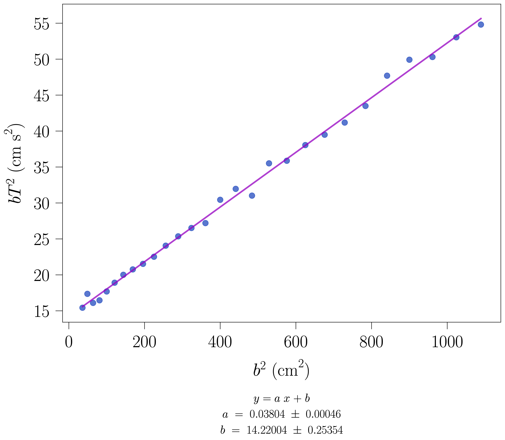

Prácticas de Laboratorio — UNED
2024-10-26
Determinación experimental del radio de giro y del momento de inercia de un péndulo físico midiendo el periodo T(b) para distintas distancias b entre el eje y el centro de masas. A partir de la linealización bT^{2} vs b^{2} se obtiene también la aceleración de la gravedad g.
En esta experiencia se investiga la relación existente entre el periodo de las oscilaciones de un péndulo físico en forma de varilla delgada y la distancia del eje de oscilación al centro de gravedad del mismo. A partir de estos datos se calcula el valor de la aceleración de la gravedad, g.
Cuando un cuerpo rígido suspendido por un eje O a una distancia, b, de su centro de masas, C, se separa de su posición de equilibrio (ver Figura 1) y se deja libre, efectúa un movimiento de oscilación alrededor del eje, cuya ecuación de movimiento viene dada por:

- Mgb \sin(\theta) = I \dfrac{d^{2}\theta}{dt^{2}} \tag{1}
En esa ecuación, I es el momento de inercia del cuerpo respecto al eje O. Esta expresión, en el caso de pequeñas oscilaciones, toma la forma más sencilla:
- Mgb \theta = I \dfrac{d^{2}\theta}{dt^{2}} \tag{2}
que se corresponde a un movimiento armónico simple de período:
T = 2\pi\, \sqrt{\dfrac{I}{Mgb}} \tag{3}
Si se denomina I_{0} al momento de inercia del cuerpo por un eje paralelo al eje O que pasa por C, la ecuación anterior se expresa:
T = 2\pi\, \sqrt{\dfrac{I_{0} + Mb^{2}}{Mgb}} \tag{4}
o bien,
T = 2\pi\, \sqrt{\dfrac{Mk^{2}+Mb^{2}}{Mgb}} \tag{5}
En esa ecuación, k es el denominado radio de giro del cuerpo alrededor del eje que pasa por C y viene dado por:
k = \sqrt{\dfrac{I_{0}}{M}} \tag{6}
La interpretación física del radio de giro de un cuerpo es la siguiente: se trata de la distancia a la que hay que colocar toda la masa del cuerpo, supuesto puntual (esto es, hay que pensar que se tiene toda la masa del cuerpo, independientemente de su forma, concentrada en un único punto), para que el momento de inercia, respecto al mismo eje inicial, de ese masa puntual sea igual al momento de inercia del cuerpo (con su forma) respecto al mencionado eje. Hay que recordar que el momento de inercia de una masa puntual, M, respecto a un eje que se encuentra a una distancia d de la masa es: I_{\textrm{masa puntual}}=M\,d^{2}.
Por lo tanto, por definición, se cumplirá lo siguiente:
I_{0} \equiv M\,k^{2}
Así lo que el periodo de oscilación viene dado, finalmente, por la siguiente expresión:
\boxed{T = 2\pi\, \sqrt{\dfrac{k^{2}+b^{2}}{gb}}} \tag{7}
Como péndulo se emplea una varilla delgada metálica que tiene practicadas, cada centímetro, una serie de ranuras. La ranura central coincide con el centro de masas de la varilla. El péndulo puede hacerse oscilar alrededor de una cuchilla metálica de sección triangular, la cual puede situarse mediante un tornillo de presión sobre cualquiera de las ranuras a lo largo de la varilla.

b es la distancia entre la arista de la cuchilla (la línea sobre la que gira la varilla) y el centro de masas, no la distancia entre ranuras. Si la cuchilla apoya en el borde superior de la ranura, la b real es unos milímetros mayor que la nominal, y ese error sistemático se nota en el ajuste: la ordenada en el origen, y con ella k, sale desplazada.
1
Haced una tabla como la que se indica, del período T en función de la distancia b entre el punto de oscilación y el centro de masas (en la misma tabla calculad los valores b T^{2} y b^{2} que serán necesarios más tarde).
Para ello, haced oscilar el péndulo alrededor de distintos ejes y determínese el período de oscilación contando cada vez al menos 20 oscilaciones.
Poned en marcha el cronómetro cuando la varilla pase por la posición de equilibrio (la vertical), que es donde se mueve más deprisa y el instante se aprecia mejor, y contad «cero» en ese paso; parad el cronómetro en el paso número 20 en el mismo sentido. El tiempo de reacción (0.1–0.2 s) se reparte así entre 20 periodos: el error en T queda en torno a 0.01 s. Dejad pasar dos o tres oscilaciones tras soltar la varilla antes de empezar a contar.
Al elegir las distancias, pensad en las dos gráficas: para localizar el mínimo conviene tomar puntos muy juntos alrededor de b\approx k, pero para la recta bT^{2} frente a b^{2} conviene que los valores de b^{2} estén repartidos de forma regular hasta el extremo de la varilla.
Notas:
La suposición de oscilaciones pequeñas implica \sin\theta\approx\theta. Para una amplitud \theta_0 el periodo real es, en buena aproximación, T \simeq T_0\left(1+\frac{1}{4}\sin^{2}\frac{\theta_0}{2}+\frac{9}{64}\sin^{4}\frac{\theta_0}{2}\right)\approx T_0\left(1+\frac{\theta_0^{2}}{16}\right), donde T_0 es el periodo de la Ecuación 7. Con \theta_0=20^{\circ} el periodo crece un 0.8 % y el valor de g que se obtiene es un 1.5 % menor que el verdadero, más que el error estadístico típico de esta práctica. Con \theta_0=5^{\circ} el efecto es del 0.05 %. Separad la varilla unos 5° (en el extremo inferior, unos 3–5 cm de desplazamiento horizontal) y usad la misma amplitud para todas las distancias b.
No toméis datos para b<6 cm: el momento recuperador Mgb es tan pequeño que el rozamiento en la cuchilla se nota, el periodo crece muy deprisa y un error de 1 mm en b es ya un 2 %.
Datos
experimentales
A continuación en la tabla se resumen los datos recogidos en el laboratorio.
Como se puede ver, por cada distancia se han tomado 5 medidas de 20 periodos.
Lo primero que hay que hacer, por tanto, es calcular el valor medio de los 20 periodos para cada distancia y, posteriormente, obtener el valor del periodo.
| Medida | b \textrm{ (m)} | 20 T_{1} (\textrm{s}) | 20 T_{2} (\textrm{s}) | 20 T_{3} (\textrm{s}) | 20 T_{4} (\textrm{s}) | 20 T_{5} (\textrm{s}) |
|---|---|---|---|---|---|---|
| 1 | 0.06 | 31.63 | 31.63 | 31.47 | 31.53 | 31.59 |
| 2 | 0.08 | 27.01 | 28.53 | 28.47 | 28.47 | 28.44 |
| 3 | 0.10 | 26.85 | 26.66 | 26.69 | 26.72 | 26.72 |
| 4 | 0.12 | 25.91 | 25.62 | 25.57 | 25.94 | 25.47 |
| 5 | 0.14 | 25.00 | 24.91 | 25.07 | 25.00 | 25.00 |
| 6 | 0.16 | 24.69 | 24.66 | 24.50 | 24.68 | 24.56 |
| 7 | 0.18 | 24.53 | 24.59 | 24.54 | 24.59 | 24.56 |
| 8 | 0.19 | 24.50 | 24.59 | 24.56 | 24.53 | 24.59 |
| 9 | 0.20 | 24.60 | 24.46 | 24.62 | 24.53 | 24.57 |
| 10 | 0.22 | 24.81 | 24.68 | 24.72 | 24.82 | 24.72 |
| 11 | 0.25 | 25.03 | 25.03 | 25.16 | 25.20 | 24.94 |
| 12 | 0.27 | 25.38 | 25.47 | 25.31 | 25.28 | 25.03 |
| 13 | 0.30 | 25.79 | 25.91 | 26.00 | 25.87 | 25.72 |
| 14 | 0.32 | 26.25 | 26.00 | 26.19 | 26.29 | 26.25 |
Atención: revisad cada fila antes de promediar. En b=0.08 m la primera medida (27.01 s) se separa de las otras cuatro en algo más de un periodo: es casi seguro un error al contar oscilaciones. Una medida así se repite en el laboratorio; si ya no se puede, se excluye y se dice en el informe, nunca se borra sin comentarlo.
2
La teoría predice un mínimo del periodo T, para b=k, siendo k el radio de giro.
Demostrar que efectivamente la función T(b) tiene un mínimo cuando b=k.
Cálculo
Tomando como referencia la ecuación (7), que no es si no una ecuación en la que se expresa el periodo T en función de la distancia b, T=T(b), lo único que hay que hacer para demostrar que presenta un mínimo, es derivarla con respecto a b e igualar la derivada a 0: \dfrac{d\, T}{d\, b}=0; para ver qué valor de b hace que la derivada se anule.
La ecuación (7), T = 2\pi\, \sqrt{\dfrac{k^{2}+b^{2}}{gb}}, representa una función T=T(b) de una sola variable, en la que k (el radio de giro) es un parámetro.
Si se deriva T=T(b) con respecto a b, y se iguala a cero la derivada, se obtiene la siguiente expresión:
\frac{\textrm{d}\,T}{\textrm{d}\,b}=0\Rightarrow \frac{\textrm{d}\,T}{\textrm{d}\,b}=\frac{\textrm{d}\,\left(2\pi\, \sqrt{\dfrac{k^{2}+b^{2}}{gb}}\right)}{\textrm{d}\,b} \Rightarrow
0 = 2\pi \frac{1}{\left(\sqrt{\dfrac{k^{2}+b^{2}}{gb}}\right)} \frac{\textrm{d}\,\left(\dfrac{k^{2}+b^{2}}{gb}\right)}{\textrm{d}\,b}\Rightarrow 0=\frac{\textrm{d}\,\left(\dfrac{k^{2}+b^{2}}{gb}\right)}{\textrm{d}\,b}
\begin{aligned}
0 &= \frac{2b\cdot gb - (k^{2} + b^{2})\cdot g}{(gb)^{2}} \\
&\Rightarrow 0 \\
&= 2g\cdot b^{2} - g\cdot k^{2} - g\cdot b^{2} \\
&\Rightarrow b^{2} \\
&= k^{2} \\
&\Rightarrow b \\
&= k
\end{aligned}
3
Llevar los puntos (b,T) de la tabla anterior a una gráfica para determinar, a partir de la misma, el valor de b para el cual T es mínimo (con objeto de estimar adecuadamente el b correspondiente al T mínimo es conveniente tener una alta densidad de puntos (b,T) en los alrededores del mínimo). Este valor de b es igual, según la teoría, al valor del radio de giro (k).
Para dar el mínimo con su error, ajustad por mínimos cuadrados una parábola T=A\,b^{2}+B\,b+C a los puntos próximos al mínimo (por ejemplo, 0.14\le b\le0.25 m). El mínimo está en b_{\min}=-B/(2A), y su error se obtiene propagando los de A y B. Con los datos de la tabla resulta b_{\min}=(0.1905\pm0.0021) m.


4
Calcular k de forma teórica y comparar dicho valor con el valor de k obtenido de forma experimental.
5
Representar gráficamente bT^{2} en función de b^{2}.
La teoría predice una relación lineal entre ambas magnitudes según la fórmula: \boxed{bT^{2} =4\pi^{2}\,\dfrac{k^{2}}{g} + 4\pi^{2}\dfrac{b^{2}}{g}} \tag{8}
Realizar el correspondiente ajuste por mínimos cuadrados, regresión lineal, para determinar el radio degiro k y el valor de g.
Calcular también los errores \Delta k y \Delta g.
Para las barras de error de la gráfica, propagad los errores de las medidas directas:
\Delta(b^{2})=2\,b\,\Delta b,\qquad \Delta(bT^{2})=\sqrt{\left(T^{2}\,\Delta b\right)^{2}+\left(2\,b\,T\,\Delta T\right)^{2}} ,
con \Delta T=\varepsilon/(20\sqrt{N}), donde \varepsilon=\max(e_p,D_m) es el error de las N=5 medidas de 20T.
Después del ajuste, representad los residuos y_i-(m x_i+n): si dibujan una curva en lugar de repartirse al azar, hay un error sistemático (véase el recuadro «¿Qué es exactamente b?»).

Cuando se representa gráficamente el contenido de la ecuación (8) modificada, para que se aprecie mejor qué (bT^{2}) se representa frente a qué (b^{2}):
bT^{2} =4\pi^{2}\,\dfrac{k^{2}}{g} + 4\pi^{2}\dfrac{b^{2}}{g} \Rightarrow bT^{2} =\boxed{\dfrac{4\pi^{2}}{g}}\cdot b^{2} + \boxed{\dfrac{4\pi^{2}\,k^{2}}{g}}
La última expresión no es más que la ecuación de una línea recta en la que
Así, al ajustar la nube de puntos experimentales mediante una regresión lineal (y = m\cdot x + n, el problema matemático), se pueden obtener los valores de g y de k, y sus correspondientes errores, por supuesto.
De la comparación, se deduce que m=\dfrac{4\pi^{2}}{g}, con lo que g es:
\boxed{g = \dfrac{4\pi^{2}}{m}}
\tag{9}
Además, se puede trasladar el error de m, obtenido de la regresión lineal, \Delta m, teniendo en cuenta que en la expresión (9) g es una función de una sola variable m. Eso significa que el error hay que calcularlo utilizando la siguiente expresión: \Delta g = \sqrt{ \left|\frac{\textrm{d} g}{\textrm{d} m}\right|^{2} \cdot \left|\Delta m\right|^{2} } \Rightarrow \Delta g = \left|\frac{\textrm{d} g}{\textrm{d} m}\right|\cdot \left|\Delta m\right| \Rightarrow \boxed{\Delta g = \left|4\pi^{2}\cdot\dfrac{-1}{m^{2}}\right|\cdot \left|\Delta m\right|}
Finalmente, el valor de g que hay que entregar en el informe será: \boxed{g = \dfrac{4\pi^{2}}{m} \pm \left|4\pi^{2}\cdot\dfrac{-1}{m^{2}}\right|\cdot \left|\Delta m\right|}
Con los datos de la tabla anterior (N=14 puntos) el ajuste da m=(4.042\pm0.023)\ \mathrm{s^{2}\,m^{-1}} y n=(0.1383\pm0.0012)\ \mathrm{m\,s^{2}}, de donde
g=(9.77\pm0.06)\ \mathrm{m/s^{2}} .
(Versiones anteriores de esta página daban g\approx10.38 m/s², calculado con los datos de otro curso, no con los de la tabla.) Fijaos en cómo se escribe: el error con una sola cifra significativa (dos si la primera es un 1) y el valor redondeado a la misma posición decimal, siempre con unidades.
Una vez obtenido g y su error, \Delta g, se puede obtener el valor de k y su error, \Delta k mediante el valor de la ordenada en el origen deducido de la regresión lineal. Para ello, lo único que hay que hacer es comparar, de nuevo, la ecuación física con la ecuación matemática: y = m\cdot x + n \equiv \dfrac{4\pi^{2}}{g} \cdot b^{2} + \boxed{ \dfrac{4\pi^{2}\,k^{2}}{g}}
e igualar, como se ha indicado en el punto 2.: n = \dfrac{4\pi^{2}\,k^{2}}{g}, con lo que k es: \boxed{k = \sqrt{ \frac{n\cdot g}{4\pi^{2}} }} \tag{10}
Con los datos de la tabla, k\approx0.1850 m.
Como g=4\pi^{2}/m, la expresión de k se simplifica: k=\sqrt{\dfrac{n\,g}{4\pi^{2}}}=\sqrt{\dfrac{n}{m}}. Así k depende solo de los dos parámetros del ajuste, y la forma más directa de obtener su error es
\frac{\Delta k}{k}=\frac{1}{2}\sqrt{\left(\frac{\Delta n}{n}\right)^{2}+\left(\frac{\Delta m}{m}\right)^{2}} .
(Esta fórmula ignora la correlación entre m y n, que salen del mismo ajuste; quien use un programa que dé la matriz de covarianza puede incluirla, como se hace en el análisis resuelto. No es correcto, en cambio, tratar g y n como independientes, porque g procede de m.) Por completitud, se muestra también la propagación a partir de n y g, que es la que se ha usado tradicionalmente:
En este caso, k es función de dos variables: k = k(n,g); n la ordenada en el origen del problema matemático y g el valor de la aceleración de la gravedad que se ha obtenido experimentalmente mediante la pendiente del problema matemático. Entonces, la expresión para el error que hay que utilizar en este caso es la siguiente:
\Delta k = \sqrt{ \left|\left(\frac{\partial k}{\partial n}\right)_{g}\right|^{2} \cdot \left|\Delta n\right|^{2} + \left|\left(\frac{\partial k}{\partial g}\right)_{n}\right|^{2} \cdot \left|\Delta g\right|^{2} }
Entonces:
\left(\frac{\partial k}{\partial n}\right)_{g} = \frac{1}{2\pi}\cdot\frac{1}{2}\cdot\frac{1}{\sqrt{n g}}\cdot g
\left(\frac{\partial k}{\partial g}\right)_{n} = \frac{1}{2\pi}\cdot\frac{1}{2}\cdot\frac{1}{\sqrt{n g}}\cdot n
Por lo tanto, el error en k es: \Delta k = \frac{1}{2\pi}\cdot\frac{1}{2} \frac{1}{\sqrt{n g}}\cdot\sqrt{g^{2}\left(\Delta n\right)^{2} + n^{2}\left(\Delta g\right)^{2}}\Rightarrow \boxed{\Delta k = \frac{1}{4\pi}\cdot \sqrt{ \frac{n}{g}\cdot\left(\Delta g\right)^{2} + \frac{g}{n}\cdot\left(\Delta n\right)^{2}} }
Finalmente, otro de los valores de k que hay que entregar en el informe será: \boxed{ k = \sqrt{ \frac{n\cdot g}{4\pi^{2}} } \pm \frac{1}{4\pi}\cdot \sqrt{ \frac{n}{g}\cdot\left(\Delta g\right)^{2} + \frac{g}{n}\cdot\left(\Delta n\right)^{2}} }
Con los datos de la tabla y la fórmula k=\sqrt{n/m}:
k=(0.1850\pm0.0012)\ \mathrm{m} .
(Versiones anteriores daban k\approx19.33\pm1.72, sin unidades y con datos de otro curso.) Este valor no es compatible con L/\sqrt{12}=0.1905 m: es la huella del error sistemático en b descrito en el recuadro «¿Qué es exactamente b?».
6
Comparar los diferentes valores de k obtenidos y comparar el valor de g que se ha determinado con el que aparece en los libros de Física.
Radio de giro
En esta práctica, se han obtenido 3 valores para el radio de giro, k:
1. Método:
Por inspección directa, al representar gráficamente el periodo de oscilación del péndulo frente a la distancia, b, a la que se encuentra el eje de giro respecto a centro de masas del péndulo físico, una varilla delgada.
k \approx 20 \textrm{ cm}
Con el ajuste de una parábola a los puntos próximos al mínimo (paso 3), k=b_{\min}=(0.1905\pm0.0021) m.
Además, se ha comprobado que, efectivamente, de la expresión del periodo, T, frente a b, la teoría predice un mínimo para b=k.
2. Método:
Mediante la aplicación de la expresión teórica para el radio de giro de una varilla delgada, de longitud L=66 cm y de masa M.
La expresión para el momento de inercia de una varilla delgada es: I_{\textrm{varilla}}= \frac{1}{12}ML^{2}.
Teniendo en cuenta la definición del radio de giro, como la distancia a la que hay que colocar toda la masa del sistema, supuesta puntual (con lo que se coloca toda la masa M en el mismo punto) para que el momento de inercia de esa masa (qu es puntual) sea el mismo, en valor, que el del sistema, se puede escribir la siguiente igualdad:
I_{0}\equiv M\,k^{2}=\frac{1}{12}\,M\,L^{2}
Con lo que se tiene (con \Delta L=1 mm): \boxed{k=\frac{L}{2\sqrt{3}}}=\frac{0.660\ \mathrm{m}}{2\sqrt{3}}=(0.1905\pm0.0003)\ \mathrm{m}
3. Método:
Completando la linealización del problema; esto es, representando bT^{2} frente a b^{2}, que no es si no una línea recta, y haciendo un ajuste por mínimos cuadrados, una regresión lineal de la nube de puntos experimentales obtenidos. Así, el valor para k es el siguiente: k = \sqrt{ \frac{n\cdot g}{4\pi^{2}} } \pm \frac{1}{4\pi}\cdot \sqrt{ \frac{n}{g}\cdot\left(\Delta g\right)^{2} + \frac{g}{n}\cdot\left(\Delta n\right)^{2}}
Aceleración de la gravedad local
De manera indirecta, también se ha obtenido el valor de la gravedad local, valor en el laboratorio en el que se han tomado los datos experimentales.
Se puede comparar ese valor con el local para la ubicación del laboratorio, que se puede obtener aquí o en el Sistema de Información de Gravedad del PTB. Conociendo los valores de la latitud y de la longitud de la Facultad de Ciencia y Tecnología (Google Maps, por ejemplo), el valor local que se obtiene es g_{\mathrm{ref}}=9.805\ \mathrm{m/s^{2}} (fórmula de la gravedad normal para la latitud 43.33° N y unos 40 m de altitud).
El valor obtenido en el experimento es: g=\frac{4\pi^{2}}{m}\pm\frac{4\pi^{2}}{m^{2}}\,\Delta m=(9.77\pm0.06)\ \mathrm{m/s^{2}}\quad\text{(datos de la tabla).}
Comprobad si g_{\mathrm{ref}} está dentro de vuestro intervalo g\pm\Delta g; si no lo está, buscad el error sistemático (amplitud, posición del eje, contaje) antes de culpar al azar.
Demostrad, a partir de la Ecuación 7, que los ejes situados a distancias b y b'=k^{2}/b del centro de masas dan el mismo periodo. En vuestra gráfica T(b), trazad una horizontal que corte la curva en dos puntos b_1 y b_2; comprobad que b_1 b_2\approx k^{2} y que g=4\pi^{2}(b_1+b_2)/T^{2} (es el principio del péndulo reversible de Kater).
Cabecera corregida: los tiempos corresponden a 8 periodos y las distancias están en centímetros.
| Medida | b (cm) | 8T_{1} (s) | 8T_{2} (s) | 8T_{3} (s) | 8T_{4} (s) | 8T_{5} (s) |
|---|---|---|---|---|---|---|
| 1 | 6 | 12.99895443 | 12.90548965 | 13.05025367 | 12.9347077 | 12.91952281 |
| 2 | 7 | 12.81671411 | 12.76343481 | 12.81286148 | 12.71609465 | 12.60688172 |
| 3 | 8 | 11.5447544 | 11.56685792 | 11.49030094 | 11.40706511 | 11.38370183 |
| 4 | 9 | 11.02232207 | 10.90558487 | 10.84101145 | 11.01853529 | 10.93629146 |
| 5 | 10 | 10.86223632 | 10.67648849 | 10.75728972 | 10.72587809 | 10.66919511 |
| 6 | 11 | 10.53591243 | 10.53844271 | 10.6961495 | 10.49422565 | 10.64673892 |
| 7 | 12 | 10.33745703 | 10.51323971 | 10.54787124 | 10.34009857 | 10.33410281 |
| 8 | 13 | 10.22982403 | 10.24538881 | 10.21615792 | 10.16568609 | 10.21421499 |
| 9 | 14 | 10.04070882 | 10.10219316 | 10.077422 | 9.990448 | 10.07518122 |
| 10 | 15 | 9.71479226 | 9.82409931 | 9.74449111 | 9.70827293 | 9.84258617 |
| 11 | 16 | 10.01072454 | 9.9915201 | 10.01893586 | 9.8934188 | 9.88398566 |
| 12 | 17 | 9.81808177 | 9.91245514 | 9.79674555 | 9.95023174 | 9.91469698 |
| 13 | 18 | 9.75696467 | 9.8640002 | 9.74670703 | 9.93331551 | 9.83458617 |
| 14 | 19 | 9.66589446 | 9.88032293 | 9.82673243 | 9.69137851 | 9.81959196 |
| 15 | 20 | 9.88998452 | 9.99809063 | 9.99378546 | 9.97700407 | 10.06375981 |
| 16 | 21 | 10.04466558 | 9.982727 | 9.98233054 | 10.09136922 | 9.95971092 |
| 17 | 22 | 9.64874925 | 9.56344572 | 9.63484556 | 9.67072774 | 9.62326342 |
| 18 | 23 | 10.0069648 | 9.96347204 | 10.02714818 | 10.14999689 | 9.94535737 |
| 19 | 24 | 9.86873165 | 9.95975038 | 9.94016321 | 9.95479864 | 9.86961473 |
| 20 | 25 | 10.04903134 | 9.93269049 | 10.05691075 | 10.03144061 | 9.87863341 |
| 21 | 26 | 9.89114929 | 10.00775457 | 10.02063476 | 9.94504495 | 10.0411097 |
| 22 | 27 | 9.92649835 | 10.02065544 | 10.00031421 | 10.04139217 | 9.94861911 |
| 23 | 28 | 10.0946814 | 10.11993864 | 10.12326081 | 10.07383819 | 9.98196745 |
| 24 | 29 | 10.30451693 | 10.35349231 | 10.35649888 | 10.30114278 | 10.33577752 |
| 25 | 30 | 10.44693226 | 10.47749644 | 10.38463312 | 10.32131242 | 10.41143084 |
| 26 | 31 | 10.29065836 | 10.23842864 | 10.30631167 | 10.38671986 | 10.34412682 |
| 27 | 32 | 10.4689753 | 10.3502504 | 10.3020579 | 10.47037959 | 10.35544010 |
| 28 | 33 | 10.36985572 | 10.38402546 | 10.32778965 | 10.50808248 | 10.35128765 |
Como se puede ver, no hay error en la medida de las posiciones del eje de giro. Esto es, se asume que se mide con precisión total.
Si se hubiera fijado el eje de giro en posiciones fijadas a mano para cada experimento y midiendo la distancia en cada caso una vez, habría que tener en cuenta el error en la medida; en este caso, el error del aparato, la precisión de la cinta métrica, por ejemplo. Si cada posicionamiento del eje se hace varias veces, se tendría la posibilidad de evaluar el error cuadrático medio para cada posición.
En el caso de los valores de los 8 periodos medidos (cada dato es el tiempo de 8T; dividid por 8 para obtener T), los datos experimentales, como se puede ver es imposible que representen datos reales medidos en el laboratorio, puesto que supondría que se han medido con una precisión de ¡10^{-8} en segundos!. Evidentemente, son datos calculados. Se han tomado los datos experimentales reales de otro curso, y se les ha añadido un ruido con una distribución normal. Así, lo primero que hacer en este caso es redondear a la centésisma de segundo que es la precisión del cronómetro utilizado en el laboratorio.